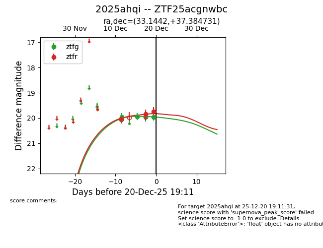
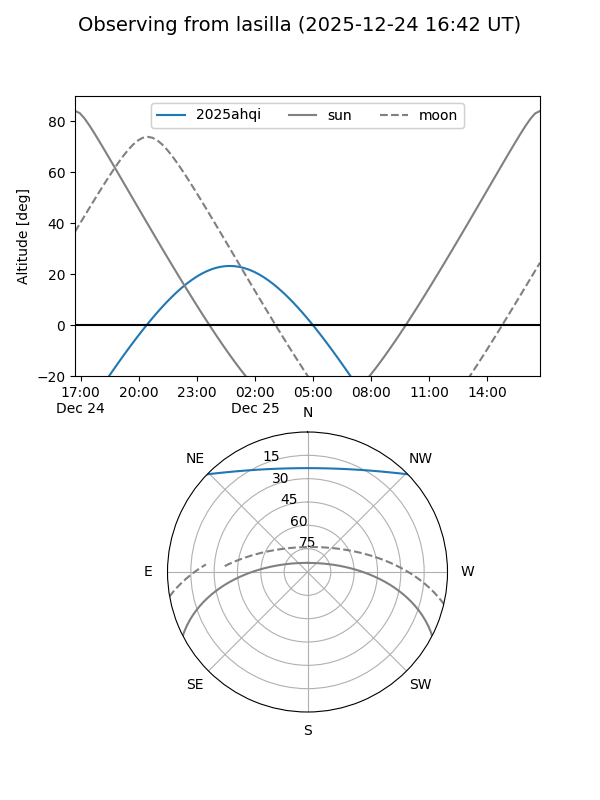
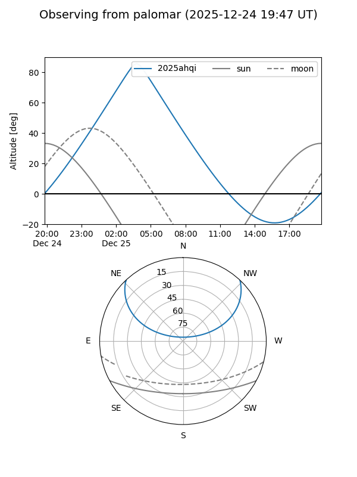
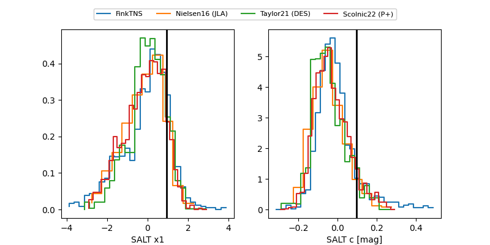

2025ahqi
Target 2025ahqi at 2025-12-20 06:54
Aliases and brokers:
FINK: fink-portal.org/ZTF25acgnwbc
Lasair: lasair-ztf.lsst.ac.uk/objects/ZTF25acgnwbc
ALeRCE: alerce.online/object/ZTF25acgnwbc
TNS: wis-tns.org/object/2025ahqi
YSE: ziggy.ucolick.org/yse/transient_detail/2025ahqi
alt names
ZTF25acgnwbc (ztf,fink_ztf)
2025ahqi (tns,yse)
Coordinates:
equatorial (ra, dec) = 33.1442,+37.38473
equatorial (HMS+DMS) = 02:12:34.62,+37:23:05.03
galactic (l, b) = (140.3098,-22.73373)
Flags:
Photometry:
last ztfg=19.96, ztfr=19.75
6 ztfg, 3 ztfr detections
Lightcurve

Visibility


Additional plots
